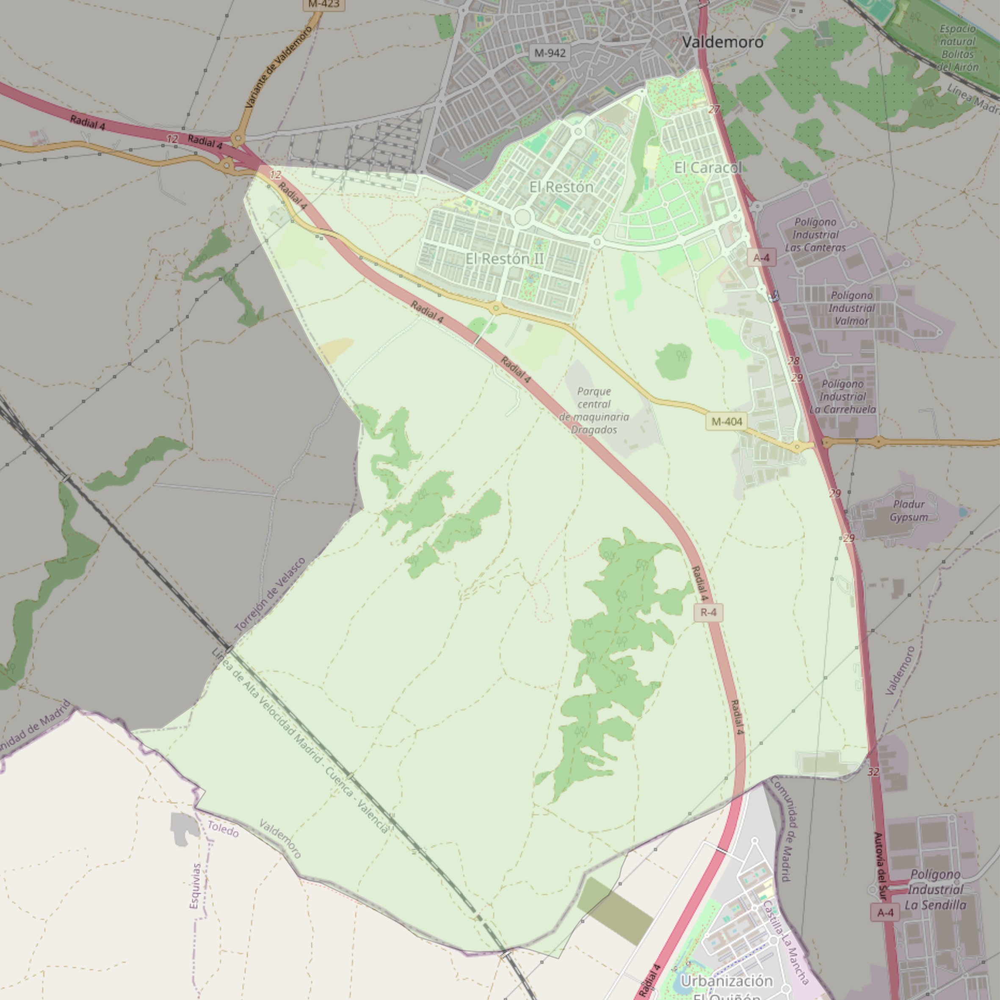

Nuestra Señora del Pilar

- Arciprestazgo
- Valdemoro
- Población
- Valdemoro
- Dirección postal
- Avda. Mar Egeo, 3
- Código postal
- 28341
- Extensión
- 18,60 km² (1.860 ha)
- Teléfono
- 918 950 220
- Correo electrónico
- pilardevaldemoro@gmail.com
Límites territoriales según el decreto
Partiendo de la confluencia de la autopista A-4 con la entrada al paseo Enrique Tierno Galván, arrancan por el eje del paseo Enrique Tierno Galván (en dirección suroeste; siguen por el eje del paseo Párroco Don Lorenzo (suroeste), por el eje de la avenida Mar Mediterráneo (suroeste), por el eje de la calle Cibeles (suroeste), por el eje de la calle Illescas (suroeste), por el eje de la avenida Mar Egeo (noroeste), por una línea recta imaginaria hasta el límite con el municipio de Torrejón de Velasco (oeste), por los límites de los términos municipales de Valdemoro-Torrejón de Velasco (suroeste), por los límites de los términos municipales de Valdemoro-Seseña (sureste), por los límites de los términos municipales de Valdemoro-Ciempozuelos (noreste), por el eje de la autopista A-4 (noroeste) hasta la confluencia con la entrada al paseo Enrique Tierno Galván, punto de partida. (Boletin oficial, diciembre de 2007, pág. 1228-1229)